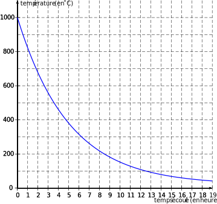

}
{Baccalauréat S Pondichéry 4 mai 2018}
Exercice 1 6 points
Commun à tous les candidats
Les parties A et B peuvent être traitées de façon indépendante.
Dans une usine, un four cuit des céramiques à la température de 1000 ° C. À la fin de la
cuisson, il est éteint et il refroidit.
On s'intéresse à la phase de refroidissement du four, qui débute dès l'instant où il est éteint.
La température du four est exprimée en degré Celsius ( ° C).
La porte du four peut être ouverte sans risque pour les céramiques dès que sa température est
inférieure à $70$ ° C. Sinon les céramiques peuvent se fissurer, voire se casser.
Partie A
Pour un nombre entier naturel $n$, on note $T_n$ la température en degré Celsius du four au bout
de $n$ heures écoulées à partir de l'instant où il a été éteint. On a donc $T_0 = 1000$.
La température $T_n$ est calculée par l'algorithme suivant :
\begin{tabularx}{0.35\linewidth}{|X|}\hline
$T \gets 1000$\\
Pour $i$ allant de $1$ à $n$\\
$T \gets 0,82 \times T + 3,6$\\
Fin Pour\\\hline
\end{tabularx}
- Déterminer la température du four, arrondie à l'unité, au bout de $4$ heures de
refroidissement.
- Démontrer que, pour tout nombre entier naturel $n$, on a : $T_n = 980 \times 0,82^n + 20$.
- Au bout de combien d'heures le four peut-il être ouvert sans risque pour les céramiques ?
Partie B
Dans cette partie, on note $t$ le temps (en heure) écoulé depuis l'instant où le four a été éteint.
La température du four (en degré Celsius) à l'instant $t$ est donnée par la fonction $f$ définie,
pour tout nombre réel $t$ positif, par :
\[f(t) = a\text{e}^{- \frac{t}{5}} + b,\]
où $a$ et $b$ sont deux nombres réels.
On admet que $f$ vérifie la relation suivante : $f'(t) + \dfrac{1}{5}f(t) = 4$.
- Déterminer les valeurs de $a$ et $b$ sachant qu'initialement, la température du four est de
$1000$ ° C, c'est-à-dire que $f(0) = 1000$.
- Pour la suite, on admet que, pour tout nombre réel positif $t$:
\[f(t) = 980\text{e}^{- \frac{t}{5}} + 20.\]
- Déterminer la limite de $f$ lorsque $t$ tend vers $+ \infty$.
- Étudier les variations de $f$ sur $[0;+ \infty[$.
En déduire son tableau de variations complet.
- Avec ce modèle, après combien de minutes le four peut-il être ouvert sans risque pour
les céramiques ?
La température moyenne (en degré Celsius) du four entre deux instants $t_1$ et $t_2$ est donnée
par: $\dfrac{1}{t_2 - t_1}\displaystyle\int_{t_1}^{t_2} f(t)\:\text{d}t$.
À l'aide de la représentation graphique de $f$ ci-dessous, donner une estimation de la
température moyenne $\theta$ du four sur les $15$ premières heures de refroidissement.
Expliquer votre démarche.

Calculer la valeur exacte de cette température moyenne $\theta$ et en donner la valeur
arrondie au degré Celsius.
Dans cette question, on s'intéresse à l'abaissement de température (en degré Celsius) du
four au cours d'une heure, soit entre deux instants $t$ et $(t + 1)$. Cet abaissement est donné
par la fonction $d$ définie, pour tout nombre réel $t$ positif, par : $d(t) = f(t) - f(t + 1)$.
- Vérifier que. pour tout nombre réel $t$ positif: $d(t) = 980\left(1 - \text{e}^{- \frac{1}{5}}\right)\text{e}^{- \frac{t}{5}}$.
- Déterminer la limite de $d(t)$ lorsque $t$ tend vers $+ \infty$.
Quelle interprétation peut-on en donner ?
Exercice 2 4 points
Commun à tous les candidats
Le plan est muni d'un repère orthonormé (O; $\vec{u}$, $\vec{v}$).
Les points A, B et C ont pour affixes respectives $a = - 4,\: b = 2$ et $c = 4$.
- On considère les trois points A$'$, B$'$ et C$'$ d'affixes respectives $a'= \text{j}a$, $b'= \text{j}b$ et $c'= \text{j}c$ où j est le nombre complexe $-\dfrac{1}{2} + \text{i}\dfrac{\sqrt{3}}{2}$.
- Donner la forme trigonométrique et la forme exponentielle de j.
En déduire les formes algébriques et exponentielles de $a'$, $b'$ et $c'$.
- Les points A, B et C ainsi que les cercles de centre O et de rayon 2, 3 et 4 sont
représentés sur le graphique fourni en Annexe.
Placer les points A$'$, B$'$ et C$'$ sur ce graphique.
Montrer que les points A$'$, B$'$ et C$'$ sont alignés.
On note M le milieu du segment [A$'$C], N le milieu du segment [C$'$C] et P le milieu du
segment [C$'$A].
Démontrer que le triangle MNP est isocèle.
Exercice 3 5 points
Commun à tous les candidats
Une entreprise conditionne du sucre blanc provenant de deux exploitations U et V en paquets
de 1 kg et de différentes qualités.
Le sucre extra fin est conditionné séparément dans des paquets portant le label « extra fin » .
Les parties A, B et C peuvent être traitées de façon indépendante.
Dans tout l'exercice, les résultats seront arrondis, si nécessaire, au millième.
Partie A
Pour calibrer le sucre en fonction de la taille de ses cristaux, on le fait passer au travers d'une
série de trois tamis positionnés les uns au-dessus des autres et posés sur un récipient à fond
étanche.
Les ouvertures des mailles sont les suivantes :
Les cristaux de sucre dont la taille est inférieure à $0,2$ mm se trouvent dans le récipient à fond
étanche à la fin du calibrage. Ils seront conditionnés dans des paquets portant le label « sucre
extra fin » .
- On prélève au hasard un cristal de sucre de l'exploitation U. La taille de ce cristal,
exprimée en millimètre, est modélisée par la variable aléatoire $X_{\text{ U}}$ qui suit la loi normale
de moyenne $\mu_{\text{ U}} = 0,58$mm et d'écart type $\sigma_{\text{ U}} = 0,21$mm.
- Calculer les probabilités des évènements suivants : $X_{\text{ U}} < 0,2$ et $0,5 \leqslant X_{\text{ U}} < 0,8$.
- On fait passer 1800 grammes de sucre provenant de l'exploitation U au travers de la
série de tamis.
Déduire de la question précédente une estimation de la masse de sucre récupérée dans
le récipient à fond étanche et une estimation de la masse de sucre récupérée dans le
tamis 2.
- On prélève au hasard un cristal de sucre de l'exploitation V. La taille de ce cristal,
exprimée en millimètre, est modélisée par la variable aléatoire $X_{\text{V}}$ qui suit la loi normale
de moyenne $\mu_{\text{V}} = 0,65$ mm et d'écart type $\sigma_{\text{V}}$ à déterminer.
Lors du calibrage d'une grande quantité de cristaux de sucre provenant de l'exploitation V,
on constate que 40 % de ces cristaux se retrouvent dans le tamis 2.
Quelle est la valeur de l'écart type $\sigma_{\text{V}}$ de la variable aléatoire $X_{\text{V}}$ ?
Partie B
Dans cette partie, on admet que 3 % du sucre provenant de l'exploitation U est extra fin et que
5 % du sucre provenant de l'exploitation V est extra fin.
On prélève au hasard un paquet de sucre dans la production de l'entreprise et, dans un souci
de traçabilité, on s'intéresse à la provenance de ce paquet.
On considère les évènements suivants:
- [$\bullet$] $U$ : « Le paquet contient du sucre provenant de l'exploitation U » {} ;
- [$\bullet$] $V$ : « Le paquet contient du sucre provenant de l'exploitation V » {} ;
- [$\bullet$] $E$ : « Le paquet porte le label "extra fin" » {}.
- Dans cette question, on admet que l'entreprise fabrique 30 % de ses paquets avec du sucre
provenant de l'exploitation U et les autres avec du sucre provenant de l'exploitation V,
sans mélanger les sucres des deux exploitations.
- Quelle est la probabilité que le paquet prélevé porte le label « extra fin » {} ?
- Sachant qu'un paquet porte le label « extra fin » , quelle est la probabilité que le sucre
qu'il contient provienne de l'exploitation U ?
L'entreprise souhaite modifier son approvisionnement auprès des deux exploitations afin
que parmi les paquets portant le label « extra fin », 30 % d'entre eux contiennent du sucre
provenant de l'exploitation U.
Comment doit-elle s'approvisionner auprès des exploitations U et V ?
Toute trace de recherche sera valorisée dans cette question.
Partie C
- L'entreprise annonce que 30 % des paquets de sucre portant le label «extra fin» qu'elle
conditionne contiennent du sucre provenant de l'exploitation U.
Avant de valider une commande, un acheteur veut vérifier cette proportion annoncée. Il
prélève $150$ paquets pris au hasard dans la production de paquets labellisés « extra fin » {} de
l'entreprise. Parmi ces paquets, $30$ contiennent du sucre provenant de l'exploitation U.
A-t-il des raisons de remettre en question l'annonce de l'entreprise ?
- L'année suivante, l'entreprise déclare avoir modifié sa production. L'acheteur souhaite
estimer la nouvelle proportion de paquets de sucre provenant de l'exploitation U parmi les
paquets portant le label « extra fin » .
Il prélève 150 paquets pris au hasard dans la production de paquets labellisés « extra fin » {} de l'entreprise. Parmi ces paquets 42 % contiennent du sucre provenant de l'exploitation U.
Donner un intervalle de confiance, au niveau de confiance 95 % , de la nouvelle proportion
de paquets labellisés « extra fin » {} contenant du sucre provenant de l'exploitation U.
Exercice 4 5 points
Candidats n'ayant pas suivi l'enseignement de spécialité
Dans l'espace muni du repère orthonormé (O; $\vec{i}$, $\vec{j}$, $\vec{k}$) d'unité 1cm, on considère les points
A, B, C et D de coordonnées respectives (2;1;4), $(4;-1;0)$, $(0;3;2)$ et $(4;3;-2)$.
- Déterminer une représentation paramétrique de la droite (CD).
- Soit $M$ un point de la droite (CD).
- Déterminer les coordonnées du point $M$ tel que la distance B$M$ soit minimale.
- On note H le point de la droite (CD) ayant pour coordonnées $(3;3;- 1)$.
Vérifier que les droites (BH) et (CD) sont perpendiculaires.
- Montrer que l'aire du triangle BCD est égale à 12 cm$^2$.
-
- Démontrer que le vecteur $\vec{n}\begin{pmatrix}2\\1\\2\end{pmatrix}$ est un vecteur normal au plan (BCD).
- Déterminer une équation cartésienne du plan (BCD).
- Déterminer une représentation paramétrique de la droite $\Delta$ passant par A et orthogonale
au plan (BCD).
- Démontrer que le point I, intersection de la droite $\Delta$ et du plan (BCD) a pour
coordonnées $\left(\dfrac{2}{3};\dfrac{1}{3};\dfrac{8}{3}\right)$.
- Calculer le volume du tétraèdre ABCD.
Exercice 4 5 points
Candidats ayant suivi l'enseignement de spécialité
À toute lettre de l'alphabet on associe un nombre entier $x$ compris entre 0 et 25 comme
indiqué dans le tableau ci-dessous:
\begin{tabularx}{\linewidth}{|c|*{13}{>{\centering \arraybackslash}X|}}\hline
Lettre &A &B &C &D &E &F &G &H &I &J &K &L &M\\ \hline
$x$ &0 &1 &2 &3 &4 &5 &6 &7 &8 &9 &10 &11 &12\\ \hline\hline
Lettre &N &O &P &Q &R &S &T &U &V &W &X &Y &Z\\ \hline
$x$ &13&14&15&16&17&18&19&20&21&22&23 &24 &25\\ \hline
\end{tabularx}
Le « chiffre de RABIN » {} est un dispositif de cryptage asymétrique inventé en 1979 par
l'informaticien Michael Rabin.
Alice veut communiquer de manière sécurisée en utilisant ce cryptosystème. Elle choisit deux
nombres premiers distincts $p$ et $q$. Ce couple de nombres est sa clé privée qu'elle garde
secrète.
Elle calcule ensuite $n = p \times q$ et elle choisit un nombre entier naturel $B$ tel que $0 \leqslant B \leqslant n -1$.
Si Bob veut envoyer un message secret à Alice, il le code lettre par lettre.
Le codage d'une lettre représentée par le nombre entier $x$ est le nombre $y$ tel que :
\[y \equiv x(x + B)\:\: [n] \:\text{ avec }\: 0 \leqslant y \leqslant n.\]
Dans tout l'exercice on prend $p = 3,\: q = 11$ donc $n = p \times q = 33$ et $B = 13$.
Partie A : Cryptage
Bob veut envoyer le mot « NO » {} à Alice.
- Montrer que Bob code la lettre « N » {} avec le nombre 8.
- Déterminer le nombre qui code la lettre « O » .
Partie B : Décryptage
Alice a reçu un message crypté qui commence par le nombre 3.
Pour décoder ce premier nombre, elle doit déterminer le nombre entier $x$ tel que :
\[x(x + 13) \equiv 3 \:\: [33]\: \text{ avec }\: 0 \leqslant x < 26.\]
- Montrer que $x(x + 13) \equiv 3\:\: [33]$ équivaut à $(x + 23)^2 \equiv 4\:\: [33]$.
-
- Montrer que si $(x + 23)^2 \equiv 4\:\: [33]$ alors le système d'équations $\left\{\begin{array}{l c l}
(x + 23)^2 &\equiv &4 \:\: [3]\\
(x + 23)^2 &\equiv &4 \:\: [11]
\end{array}\right.$ est vérifié.
- Réciproquement, montrer que si $\left\{\begin{array}{l c l}
(x + 23)^2 &\equiv &4\:\: [3]\\
(x + 23)^2 &\equiv &4 \:\: [11]
\end{array}\right.$ alors $(x + 23)^2 \equiv 4\:\: [33]$.
- En déduire que $x(x + 13) \equiv 3\:\: [33] \iff \left\{\begin{array}{l c l}
(x + 23)^2 &\equiv&1 \:\: [3]\\
(x + 23)^2 &\equiv& 4 \:\: [11]
\end{array}\right.$
Déterminer les nombres entiers naturels $a$ tels que $0 \leqslant a < 3$ et $a^2 \equiv 1 \:\: [3]$.
Déterminer les nombres entiers naturels $b$ tels que $0 \leqslant b < 11$ et $b^2 \equiv 4\:\: [11]$.
- En déduire que $x(x + 13) \equiv 3 \quad[33]$ équivaut aux quatre systèmes suivants :
\[\left\{\begin{array}{l c l}
x &\equiv&2\quad [3]\\
x&\equiv &8\quad[11]
\end{array}\right. \: \text{ ou } \left\{\begin{array}{l c l}
x &\equiv& 0\quad[3]\\
x &\equiv& 1 \quad[11]
\end{array}\right.\: \text{ ou } \left\{\begin{array}{l c l}
x &\equiv& 2\quad[3]\\
x &\equiv&1 \quad[11]
\end{array}\right.\: \text{ ou } \left\{\begin{array}{l c l}
x &\equiv& 0\quad [3]\\
x &\equiv& 8 \quad [11]
\end{array}\right.\]
- On admet que chacun de ces systèmes admet une unique solution entière $x$ telle que
$0 \leqslant x < 33$.
Déterminer, sans justification, chacune de ces solutions.
Compléter l'algorithme en Annexe pour qu'il affiche les quatre solutions trouvées dans la
question précédente.
Alice peut-elle connaître la première lettre du message envoyé par Bob ?
Le « chiffre de RABIN » {} est-il utilisable pour décoder un message lettre par lettre ?
ANNEXE
À COMPLÉTER ET À REMETTRE AVEC LA COPIE
EXERCICE 2
EXERCICE 4 (spécialité)
\begin{tabularx}{0.7\linewidth}{|X|}\hline
Pour ...... allant de ......à .......\\
\quad Si le reste de la division de ....... par ....... est égal à ....... alors\\
\qquad Afficher .......\\
\quad Fin Si\\
Fin Pour\\ \hline
\end{tabularx}